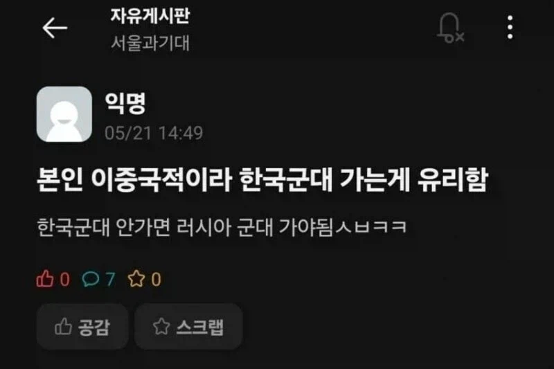

앗

앗
말뚝 박아라 ㅋㅋㅋ
인정..
점마는 한러혼혈이거나 부모중 한명이 고려인인가보네. 한국은 외국국적불행사서약이 있고 러시아는 이중국적일시 러시아 영토에서는 러시아국적만 인정해서 그냥 러시아 국적은 빠르게 버리는 게 나음.
빅터대헌오라누시군 잘 살고계신가요
군대 좋아청년
러시아는 만 18세 이상 만 30세까지의 남성을 대상으로 의무소집(징병제)를 시행하고 있다. 복무기간은 1년간 의무복무이며 징집주기는 연 2회 실시한다. 소집 명령을 받고도 응하지 않으면 처벌받으며, 징집 회피를 막기 위해 출국 금지 등의 법적 제약의 대상이 될 수 있다. 또한 정기 의무 징병과는 별도로 크라이나 전쟁 이후 예비군을 강제 소집하는 2022년 러시아 동원령 같은 비정규 전시 동원이 병행될 수 있다.
다만 한국과 러시아는 외국 군복무 인정에 대한 상호 협정 대상이 아니기 때문에 한국에서 군복무를 마쳤다고 해서 러시아의 징집 의무가 자동으로 면제되거나 없어지진 않는다. 즉, 한국에서 군대를 마쳤더라도 러시아 국적을 유지한 채로 러시아 내 주소지가 등록되어 있거나 러시아에 거주할 경우 정기 병역 및 예비역 소집 대상으로 분류되어 징집될 수 있다는 얘기이다. 이를 피하기 위할 경우 러시아 외에서 영구 거주한다는 사실을 명확히 하고 러시아 내 주소지 등록을 해제하면 징집 통지서 발급 대상에서 제외되나 만일 이 상태로 러시아에 입국하여 장기 체류할 경우 다시 병역 등록 대상자로 전환될 수 있다.
살고싶으면 부사관까지 해야겠네
헉
지금도 로씨야련방정부에서 자국 남성 국적자 복귀하라고 명령 내리는데
ㅋㅋㅋㅋㅋ 로씨야 국적 포기해야될텐데